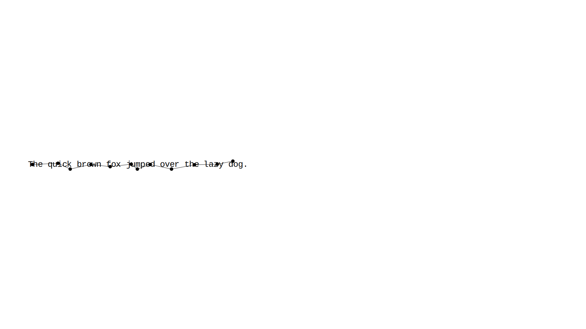
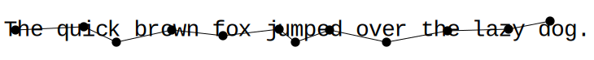
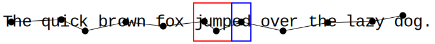
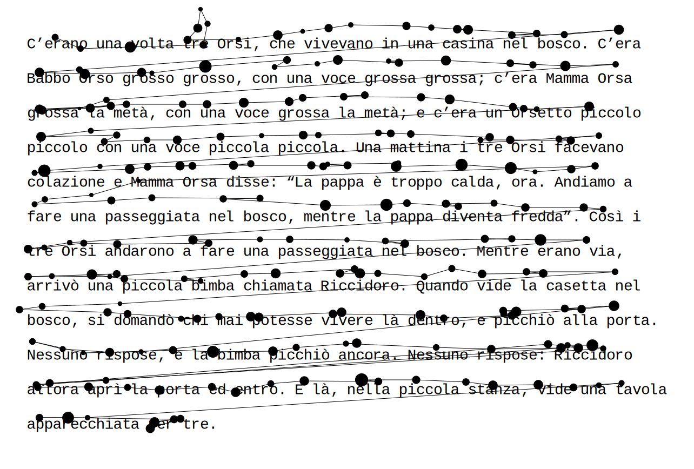
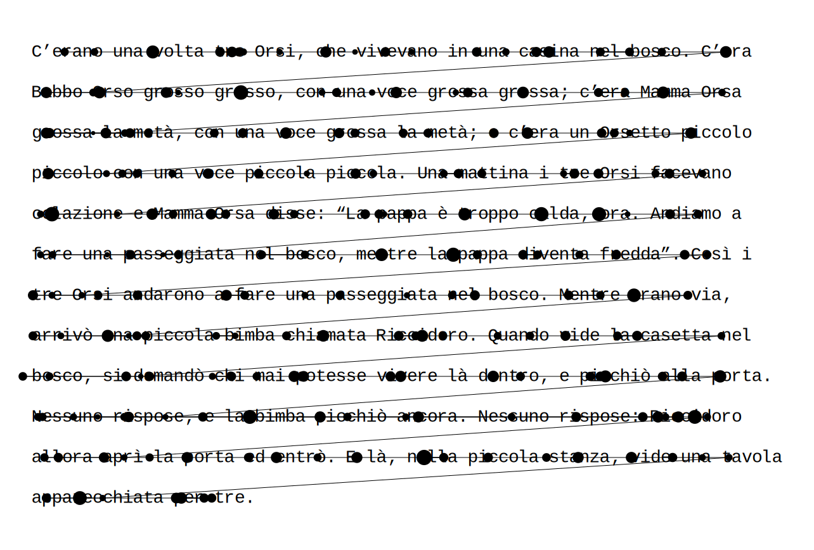

Package eyekit
Eyekit is a Python package for handling and visualizing eyetracking data, with a particular emphasis on the reading of sentences and multiline passages presented in a fixed-width font. Eyekit is licensed under the terms of the MIT License.
Installation
Eyekit is not currently listed in PyPI, but the latest version can be installed directly from the GitHub repo using pip:
pip install https://github.com/jwcarr/eyekit/archive/master.tar.gz
Eyekit is compatible with Python 3.5 and up. The only required dependency is Numpy, which will be installed automatically by pip if necessary. CairoSVG is required if you want to export visualizations into formats other than SVG. Scipy and Scikit-learn are required by certain tools.
Getting Started
Once installed, import Eyekit in the normal way:
>>> import eyekit
Eyekit makes use of two core types of object: the TextBlock object and the FixationSequence object. Much of Eyekit's functionality involves bringing these two objects into contact; typically, we have a passage of text and we want to analyze which parts of the text a participant is looking at.
The TextBlock object
A TextBlock object can represent a word, sentence, or passage of text. When you create a TextBlock object, it is necessary to specify the pixel position of the first character, the pixel spacing between characters, the pixel spacing between lines, and the fontsize. Since Eyekit assumes a fixed-width font, it uses these details to establish the position of every character. Let's begin by creating a single sentence TextBlock object:
>>> sentence = 'The quick brown fox [jump]{stem_1}[ed]{suffix_1} over the lazy dog.'
>>> txt = eyekit.TextBlock(sentence, first_character_position=(100, 540), character_spacing=16, line_spacing=64, fontsize=28)
>>> print(txt)
### TextBlock[The quick brown ...]
Often we are only interested in certain parts of the sentence, or so-called "interest areas". Eyekit has a simple markup scheme for marking up interest areas, as you can see in the above sentence. Square brackets are used to mark the interest area itself (in this case jump and ed) and curly braces are used to provide a unique label for each interest area (in this case stem_1 and suffix_1). We can iterate over them using the TextBlock.interest_areas() iterator method:
>>> for interest_area in txt.interest_areas():
>>> print(interest_area.label, interest_area.text, interest_area.bounding_box)
### stem_1 jump (412, 508, 64, 64)
### suffix_1 ed (476, 508, 32, 64)
In this case, we are printing each interest area's label, its textual representation, and its bounding box (x, y, width, and height). Various other methods are available for treating all words, characters, or ngrams as interest areas. If, for example, you wanted to treat each word as an interest area, you could do the following without needing to explicitly mark up every word as an interest area:
>>> for word in txt.words():
>>> print(word.label, word.text, word.bounding_box)
### word_0 The (92, 508, 48, 64)
### word_1 quick (156, 508, 80, 64)
### word_2 brown (252, 508, 80, 64)
### word_3 fox (348, 508, 48, 64)
### word_4 jumped (412, 508, 96, 64)
### word_5 over (524, 508, 64, 64)
### word_6 the (604, 508, 48, 64)
### word_7 lazy (668, 508, 64, 64)
### word_8 dog (748, 508, 48, 64)
The FixationSequence object
Fixation data is represented in a FixationSequence object. Let's create some fake data to play around with:
>>> seq = eyekit.FixationSequence([[106, 540, 100], [190, 536, 100], [230, 555, 100], [298, 540, 100], [361, 547, 100], [430, 539, 100], [450, 539, 100], [492, 540, 100], [562, 555, 100], [637, 541, 100], [712, 539, 100], [763, 529, 100]])
Each fixation is represented by three numbers: its x-coordinate, its y-coordinate, and its duration (in this example, they're all 100ms). Once created, a FixationSequence can be traversed, indexed, and sliced as you'd expect. For example,
>>> print(seq[5:10])
### FixationSequence[Fixation[430,539], ..., Fixation[637,541]]
slices out fixations 5 through 9 into a new FixationSequence object. This could be useful, for example, if you wanted to remove superfluous fixations from the start and end of the sequence.
A basic question we might have is: Do any of these fixations fall inside my interest areas? We can write some simple code to answer this:
>>> for i, fixation in enumerate(seq):
>>> interest_area = txt.which_interest_area(fixation)
>>> if interest_area is not None:
>>> print('Fixation {} was in interest area {}, which is "{}"'.format(i, interest_area.label, interest_area.text))
### Fixation 5 was in interest area stem_1, which is "jump"
### Fixation 6 was in interest area stem_1, which is "jump"
### Fixation 7 was in interest area suffix_1, which is "ed"
Analysis
At the moment, Eyekit has a fairly limited set of analysis functions; in general, you are expected to write code to calculate whatever you are interested in measuring. The available functions can be explored in the eyekit.analysis module, but two common functions that are currently available are initial_fixation_duration() and total_fixation_duration(), which may be used like this:
>>> tot_durations = eyekit.analysis.total_fixation_duration(txt.interest_areas(), seq)
>>> init_durations = eyekit.analysis.initial_fixation_duration(txt.interest_areas(), seq)
>>> print(tot_durations)
### {'stem_1': 200, 'suffix_1': 100}
>>> print(init_durations)
### {'stem_1': 100, 'suffix_1': 100}
In this case, we see that the total duration spent inside the stem_1 bounding box was 200ms, while the duration of the initial fixation on that interest area was 100ms. Similarly, these functions can be applied to other kinds of interest areas, such as words:
>>> tot_durations_on_words = eyekit.analysis.total_fixation_duration(txt.words(), seq)
>>> print(tot_durations_on_words)
### {'word_0': 100, 'word_1': 200, 'word_2': 100, 'word_3': 100, 'word_4': 300, 'word_5': 100, 'word_6': 100, 'word_7': 100, 'word_8': 100}
Here we see that a total of 300ms was spent on word_4, "jumped".
Visualization
Eyekit has some basic tools to help you create visualizations of your data. In general, we begin by creating an Image object, specifying the pixel dimensions of the screen:
>>> img = eyekit.Image(1920, 1080)
Next we render our text and fixations:
>>> img.render_text(txt)
>>> img.render_fixations(seq)
And finally, we save the image (Eyekit supports SVG, PDF, EPS, and PNG):
>>> img.save('quick_brown.pdf')

Sometimes it's useful to see the text in the context of the entire screen; other times, we'd like to remove all that excess white space and focus on the text. To do this, you can call the crop_to_text() method prior to saving, optionally specifying some amount of margin:
>>> img.crop_to_text(margin=5)
>>> img.save('quick_brown_cropped.pdf')

There are many other options for creating custom visualizations. For example, if we wanted to depict the bounding boxes around our two interest areas, with different colors for stems and suffixes, we might do this:
>>> img = eyekit.Image(1920, 1080)
>>> img.render_text(txt)
>>> for interest_area in txt.interest_areas():
>>> if interest_area.label.startswith('stem'):
>>> img.draw_rectangle(interest_area.bounding_box, color='red')
>>> elif interest_area.label.startswith('suffix'):
>>> img.draw_rectangle(interest_area.bounding_box, color='blue')
>>> img.render_fixations(seq)
>>> img.crop_to_text(margin=5)
>>> img.save('quick_brown_with_IAs.pdf')

Multiline Passages
Handling multiline passages works in largely the same way as described above. The principal difference is that when you instantiate a TextBlock object, you must pass a list of strings (one for each line of text):
>>> txt = eyekit.TextBlock(['This is line 1', 'This is line 2'], first_character_position=(100, 540), character_spacing=16, line_spacing=64, fontsize=28)
To see an example, we'll first load in some multiline passage data that is included in this repo:
>>> example_data = eyekit.io.read('example_data.json')
>>> example_texts = eyekit.io.load_texts('example_texts.json')
and in particular we'll extract the fixation sequence for trial 0 and its associated text:
>>> seq = example_data['trial_0']['fixations']
>>> txt = example_texts[example_data['trial_0']['passage_id']]
As before, we can plot the fixation sequence over the passage of text to see what the data looks like:
>>> img = eyekit.Image(1920, 1080)
>>> img.render_text(txt)
>>> img.render_fixations(seq)
>>> img.crop_to_text(margin=50)
>>> img.save('multiline_passage.pdf')

A common issue with multiline passage reading is that fixations on one line may appear closer to another line due to imperfect eyetracker calibration or general noise. For example, the fixation on "voce" on line two actually falls into the bounding box of the word "vivevano" on line one. Likewise, the fixation on "passeggiata" in the middle of the text is closer to "Mamma" on the line above. Obviously, such "vertical drift" will cause issues in your analysis further downstream, so it may be useful to first clean up the data by snapping every fixation to its appropriate line. Eyekit implements several vertical drift correction algorithms, which can be applied using the snap_to_lines() function from the eyekit.tools module:
>>> clean_seq = eyekit.tools.snap_to_lines(seq, txt, method='warp')
The default method is warp, but you can also use chain, cluster, merge, regress, segment, and split. For a full description and evaluation of these methods, see Carr et al. (2020). This process only affects the y-coordinate of each fixation; the x-coordinate is always left unchanged. Let's have a look at the fixation sequence after applying this cleaning step:
>>> img = eyekit.Image(1920, 1080)
>>> img.render_text(txt)
>>> img.render_fixations(clean_seq)
>>> img.crop_to_text(50)
>>> img.save('multiline_passage_corrected.pdf')

The fixations on "voce" and "passeggiata", for example, are now clearly associated with the correct words, allowing us to proceed with our analysis. It is important to note, however, that drift correction should be applied with care, especially if the fixation data is very noisy or if the passage is being read nonlinearly.
Input–Output
Eyekit is not especially committed to any particular file format; so long as you have an x-coordinate, a y-coordinate, and a duration for each fixation, you are free to store data in whatever format you choose. However, as we have seen above, Eyekit provides built-in support for a JSON-based format, where a typical data file looks like this:
{
"trial_0" : {
"participant_id": "John",
"passage_id": "passage_a",
"fixations": [[412, 142, 131], [459, 163, 112], [551, 160, 334], ..., [588, 866, 224]]
},
"trial_1" : {
"participant_id": "Mary",
"passage_id": "passage_b",
"fixations": [[368, 146, 191], [431, 154, 246], [512, 150, 192], ..., [725, 681, 930]]
},
"trial_2" : {
"participant_id": "Jack",
"passage_id": "passage_c",
"fixations": [[374, 147, 277], [495, 151, 277], [542, 155, 138], ..., [1288, 804, 141]]
}
}
This format is open, human-readable, and fairly flexible. Each trial object should contain a key called fixations that maps to an array containing x, y, and duration for each fixation. Aside from this, you can freely add other key–value pairs (e.g., participant IDs, trial IDs, timestamps, etc.). These data files can be loaded using the read() function from the eyekit.io module:
>>> data = eyekit.io.read('example_data.json')
and written using the write() function:
>>> eyekit.io.write(data, 'example_data.json', indent=2)
Optionally, the indent parameter specifies how much indentation to use in the files – indentation results in larger files, but they are more human-readable.
If you store your fixation data in CSV files, you could load the data into a FixationSequence by doing something along these lines (assuming you have columns x, y, and duration):
>>> import pandas
>>> data = pandas.read_csv('mydata.csv')
>>> seq = eyekit.FixationSequence([fxn for fxn in zip(data['x'], data['y'], data['duration'])])
Eyekit also has rudimentary support for importing data from ASC files. When importing data this way, you must specify the name of a trial variable and its possible values so that the importer can determine when a new trial begins:
>>> data = eyekit.io.import_asc('mydata.asc', 'trial_type', ['Experimental'], extract_vars=['passage_id', 'response'])
In this case, when parsing the ASC file, the importer would consider
MSG 4244100 !V TRIAL_VAR trial_type Experimental
to mark the beginning of a new trial and will extract all EFIX lines that occur within the subsequent START–END block. Optionally, you can specify other variables that you want to extract (in this case passage_id and response), resulting in imported data that looks like this:
{
"trial_0" : {
"trial_type" : "Experimental",
"passage_id" : "passage_a",
"response" : "yes",
"fixations" : FixationSequence[[368, 161, 208], ..., [562, 924, 115]]
}
}
In addition, rather than load one ASC file at a time, you can also point to a directory of ASC files, all of which will then be loaded into a single dataset:
>>> data = eyekit.io.import_asc('asc_data_files/', 'trial_type', ['Experimental'], extract_variables=['passage_id', 'response'])
which could then be written out to Eyekit's native format:
>>> eyekit.io.write(data, 'converted_asc_data.json')
Sub-modules
eyekit.analysiseyekit.fixationeyekit.imageeyekit.ioeyekit.texteyekit.tools
Classes
class FixationSequence (sequence=[])-
Representation of a sequence of consecutive fixations, typically from a single trial.
Initialized with:
sequence: list of tuple of int or something similar that conforms to the following structure:[(106, 540, 100), (190, 536, 100), ..., (763, 529, 100)], where each tuple contains the X-coordinate, Y-coordinate, and duration of a fixation
Methods
def XYarray(self, include_discards=False)-
Returns a Numpy array containing the XY-coordinates of the fixations.
def Xarray(self, include_discards=False)-
Returns a Numpy array containing the X-coordinates of the fixations.
def Yarray(self, include_discards=False)-
Returns a Numpy array containing the Y-coordinates of the fixations.
def append(self, fixation)def copy(self, include_discards=False)-
Returns a copy of the fixation sequence. Does not include any discarded fixations by default, so this can be useful if you want to permanently remove all discarded fixations.
def iter_with_discards(self)-
Iterates over the fixation sequence including any discarded fixations. This is also the default behavior when iterating over a
FixationSequencedirectly. def iter_without_discards(self)-
Iterates over the fixation sequence without any discarded fixations.
def tolist(self, include_discards=False)-
Returns representation of the fixation sequence in simple list format for serialization.
class TextBlock (text, first_character_position, character_spacing, line_spacing, fontsize)-
Representation of a piece of text, which may be a word, sentence, or entire multiline passage.
Initialized with:
text: str (single line) or list of str (multiline) representing the textfirst_character_position: tuple providing the XY-coordinates of the center of the first character in the textcharacter_spacing: int Pixel distance between charactersline_spacing: int Pixel distance between linesfontsize: int Fontsize (this only affects how images are rendered and is not used in any internal calculations)
Instance variables
var character_spacing-
int Pixel distance between characters
var first_character_position-
tuple XY-coordinates of the center of the first character in the text
var fontsize-
int Fontsize
var line_positions-
int-array Y-coordinates of the center of each line of text
var line_spacing-
int Pixel distance between lines
var n_cols-
int Number of columns in the text (i.e. the number of characters in the widest line)
var n_rows-
int Number of rows in the text (i.e. the number of lines)
var word_centers-
int-array XY-coordinates of the center of each word
Methods
def characters(self, include_non_word_characters=False)-
Iterate over each character as an
InterestArea. def get_interest_area(self, label)-
Retrieve a parsed
InterestAreaby its label. def in_bounds(self, fixation, threshold)-
Returns
Trueif the given fixation is within a certain threshold of any character in the text. ReturnsFalseotherwise. def interest_areas(self)-
Iterate over each
InterestAreaparsed from the raw text during initialization. def lines(self)-
Iterate over each line as an
InterestArea. def ngrams(self, n)-
Iterate over each ngram, for given n, as an
InterestArea. def p_ngrams_fixation(self, fixation, n, gamma=30, line_only=True)-
Given a fixation, return probability distribution over ngrams in the text (or, optionally, just the line), representing the probability that each ngram is being "seen".
def rc_to_xy(self, rc, rc2=None)-
Returns x and y coordinates from row and column indices.
def which_character(self, fixation, include_non_word_characters=False)-
Returns the character
InterestAreathat the fixation falls inside def which_interest_area(self, fixation)-
Returns the parsed
InterestAreathat the fixation falls inside def which_line(self, fixation)-
Returns the line
InterestAreathat the fixation falls inside def which_word(self, fixation)-
Returns the word
InterestAreathat the fixation falls inside def words(self)-
Iterate over each word as an
InterestArea. def xy_to_rc(self, xy, xy2=None)-
Returns row and column indices from x and y coordinates.